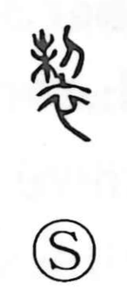

製

Uncategorized
Kun: shitateru, tsukuru | On: sei
to manufacture ・ to make ・ to produce ・ tailoring ・ composition
Explanation
Shirakawa treats 製 as a phono-semantic character built on 制 as its phonetic core. 制 originally evokes trimming the branches of a leafy tree with a knife—an image of cutting and arranging—which, when applied to cloth, yields the sense of cutting fabric and tailoring garments. From this base of sewing and finishing, the meaning widened to the general act of making or producing. It also extended to literary creation: in compounds such as 製撰 it denotes the composing of poetry, and 御製 refers to a poem or writing by the sovereign.